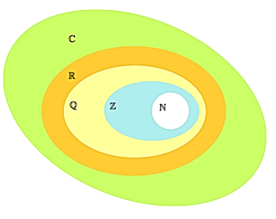
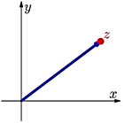
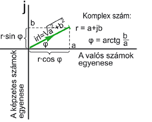
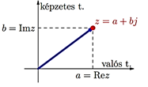
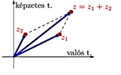

During our studies, for the first, we learned about Natural numbers, but then we started using fractional numbers, decimal fractions and negative numbers. So we’ve learnt the concept of rational numbers.
Why do we need it?
We always need to expend the numbers to have the ability of doing the basic arithmetical operations. For
example
negative numbers were necessary to do substractions like 3 – 8 and not just the ones like 9 – 5
Rational numbers have appeared because of the division, like 3 : 5 doesn’t have a solution using the
heap of
whole numbers.
And with the usage of real numbers, the operation of evolution got some limits.
After the appearance of complex numbers, we can extract square root from negative numbers too √(-5).
There is no real number, which is r2 = −1.

A mutually clear assignment can be established between the real numbers and the points of the number line, further expansion of the numbers is not possible in only one dimension.
So it was needed to make a new heap, which meets the requirements below:
- The four basic operations can be executed with the usual operational properties;
- It contains the heap of real numbers, in a way that the basic operations can be executed on real numbers with the usual behaviour;
- And root can be extracted without any limitations.

History
In the 16th century, Italian mathematicians were in a war to discover the quadratic equations solving formula. In 1547, Cardano Girolamo published his results. In reality, independently from each other Del Ferro Scipione, Fontana Nicolo and Tartaglia discovered the formula first. Cardano got the formula from Tartaglia, promising strict secrecy. Bombelli Rafael used these formulas brilliantly, and the √(-1) symbol. Later on, Euler Leonhard continued with these calculations.

Where do we use it?
- Solving equations
- Understanding geometrical shapes and real functions
- Physics (fluid flowing, quantum mechanics, the structure of space time)
Markings
We can visualize complex numbers with points and the points vectors on a plane. The plane we use to represent the complex numbers is often referred to as the complex number plane, or in other words, the Gauss-like number plane. Because we can write down these plane points (and the vectors of these) with a pair of real numbers, the complex numbers can be also written by the following pair of „numbers”: z = (a, b).

We call a + bi formulas and expressions complex numbers, where a and b are both real numbers.
The real part of z = a + bi is Re(z) = a. The imaginary part of z = a + bi is Im(z) = b.
How do we use it?
Operations with complex numbers in algebraic form:
The z1 = a1 + b1i and z2 = a2 + b2i summary of complex numbers (a1 + a2) + (b1 + b2)i means that, and the substraction (a1 − a2) + (b1 − b2)i means that.
The z1 = a1 + b1i and z2 = a2 + b2i multiplication of complex numbers (a1a2 − b1b2) + (a1b2 + a2b1)i means that.
If z1z = z2 and z1 ≠ 0, then z is z2 and z1 complex numbers' quotient: z = z2/z1.

| Name | Sign | Examples |
|---|---|---|
| Natural numbers | N | 0; 4; 895 |
| Whole numbers | Z | -7; -47 |
| Rational numbers | Q | 7/3; 2,54; 2/15; 3,87 |
| Real numbers | R | √2; π |
| Complex numbers | C | a + bi |